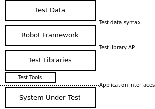
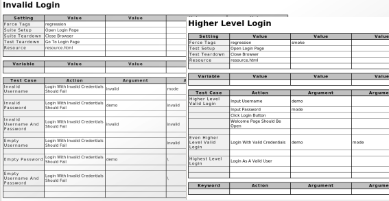

1 robot framework 简介
1.1 介绍
Robot Framework 是一个基于Python的、可扩展的、关键字驱动的测试自动化框架，用于端到端的验收测试或者验收驱动测试开发（ATDD）中。
1.2 Robot Framework的特点
- 表格式的语法简单易用，以统一的方式 创建测试用例
- 可以通过现有关键字创建可复用的高层关键字
- 提供了直观的HTML格式的 测试报告 和 日志文件
- 是一个测试平台，是应用无关的
- 提供了测试库API，可以轻易地使用Python或者Java创建自定义的测试库
- 提供了命令行接口和基于XML的输出文件，可以与现有框架集成（如持续集成系统
- 提供了多种测试库支持，如用于web测试的Selenium，Telnet等
- 可以创建数据驱动的测试用例
- 提供标签来分类和选择测试用例
- 非常容易与源码控制系统集成，因为测试套件就是文件夹和文本文件
- 提供了用例级别和测试套件级别的setup和teardown
1.3 整体架构
Robot Framework是一个通用的，应用和技术无关的框架。它的高度模块化的架构如下图所示：

测试数据(test data)使用非常简单、易于编辑的表格格式。 Robot Framework会解析测试数据，执行测试用例,，并生成日志和报告。框架本身对测试对象一无所知。而是通过测试库与其交互。测试库可能是直接使用被测应用程序的接口，也可以使用其它底层的测试工具作为驱动。
1.4 示例截图
以下是测试数据和测试报告和测试日志的截图:
